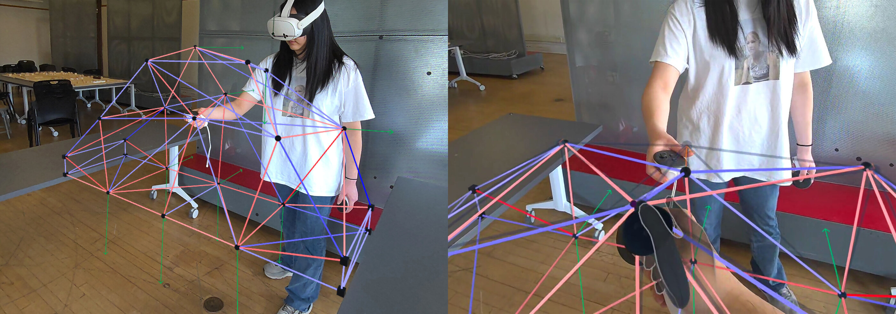
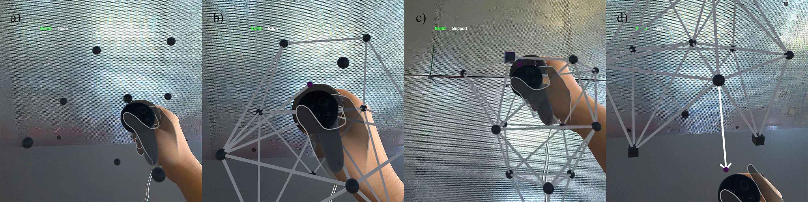
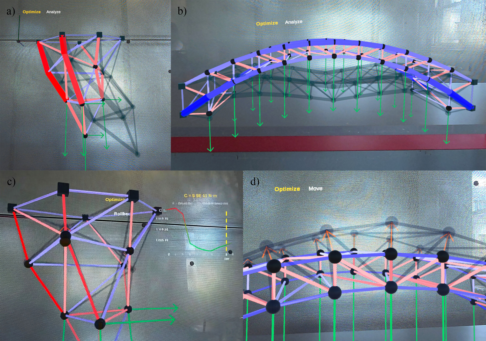
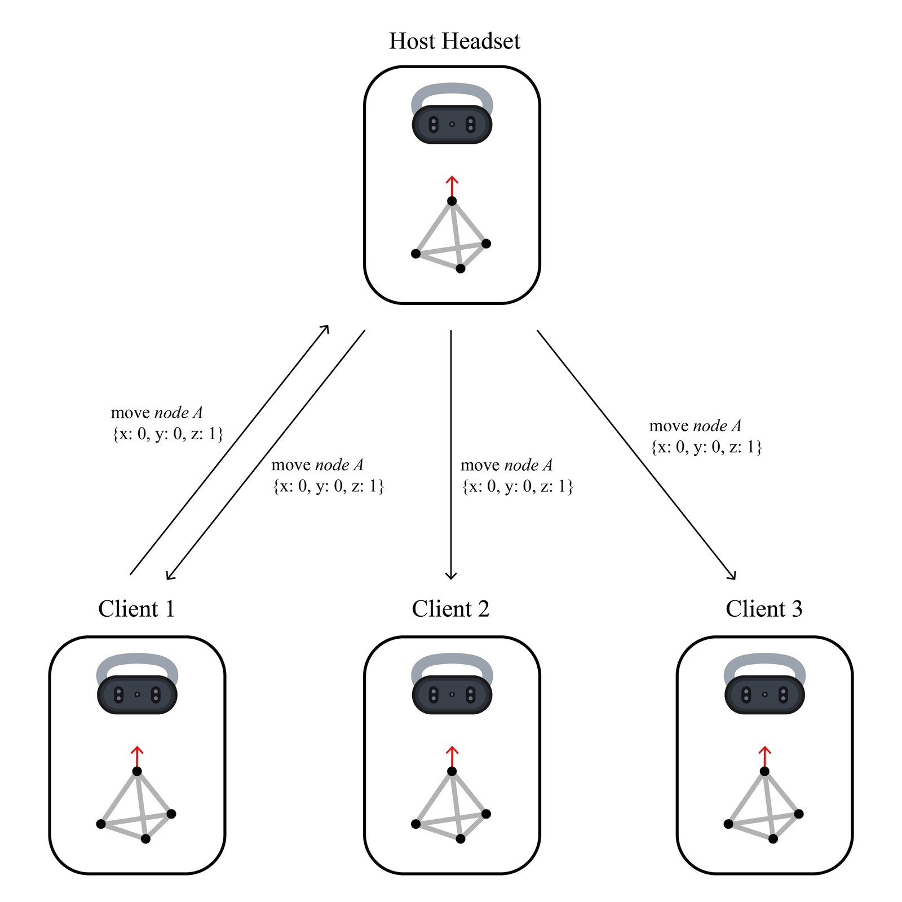
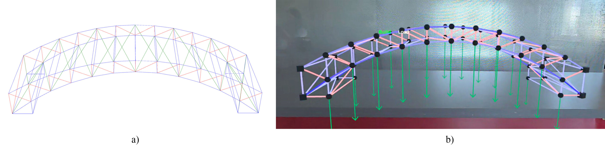

Interactive Structures XR is an augmented reality application for learning structural design. Wearing a Meta Quest 3 headset, a user builds a pin-jointed structure in the room with the controllers, applies loads, and sees the internal forces and the deformation on the structure itself. It is built in Unity and runs standalone on the headset. The work was presented at IASS-IWSS 2026 in Turin.

The model is made of nodes, edges, and loads. A small cursor follows the right controller and each tool acts on the entity nearest to it. Placing an edge takes two steps, selecting the start node and then the end node. A load is applied by selecting a node and pulling the controller in the direction of the force, and a node can be switched between free and pin-supported.

The structure is solved on the headset with the direct stiffness method, and solved again after each node is moved. Each member is a truss element that carries only axial force. Tension members are shown in red and compression members in blue, with the deformed shape as a semi-transparent overlay.
After every solve, an optimizer runs gradient descent (ADAM) on the total strain energy. The result is shown as a semi-transparent preview, with an arrow on each free node pointing toward its new position. The user can follow the arrows, or drag a node somewhere else and check whether the strain energy went down. A history graph records every analyzed configuration, and Rollback restores an earlier one.

Several headsets can join one session over a local network. All headsets align to one origin in the room, so everyone sees the structure in the same place, and any user can add, move, or remove elements at any time. Each headset runs its own solver, so only the edits are transmitted. A structure prepared in Rhino can also be imported into the session.

